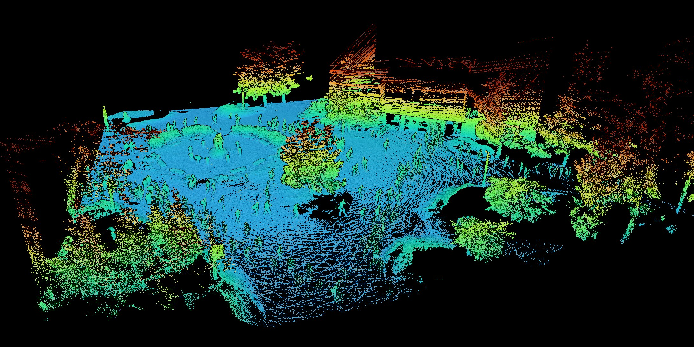

Real robots
Clearpath Jackals and TurtleBot3s with LiDAR and IMUs. Not just simulation: you'll calibrate their sensors, map real rooms on campus, and send them out on autonomous missions.
Michigan Tech · Spring 2027
In EE5531 Introduction to Robotics you transform raw sensor streams into autonomous movement. You will build software to map environments, estimate position under uncertainty, and navigate physical platforms using algorithmic foundations standard in industry.

…and throughout the autonomy industry.
Why take it
Clearpath Jackals and TurtleBot3s with LiDAR and IMUs. Not just simulation: you'll calibrate their sensors, map real rooms on campus, and send them out on autonomous missions.
ROS 2 Jazzy, Nav2, SLAM Toolbox, Gazebo, RViz2, Python, and Git. If you've read an autonomy job posting, you've seen this list.
Learn why we can trust autonomous systems. Derive a Kalman filter, then watch it pull a drifting robot back on track. Sensor models, Bayesian filtering, occupancy grids, and path planning, all on real data.
Every project is a public GitHub repository with code, maps, and video. Exactly what today's employers expect.
Course structure
Every autonomous system, from a delivery robot to a self-driving truck, runs the same loop. The course builds it one stage at a time: learn the theory, implement it in ROS 2, then prove it works on a real robot. By the end of the semester, your code runs the whole loop.
LiDAR, IMU, and wheel encoders. Noise models and calibration.
Hands-on: put a robot in front of a wall at 0.5–2 m, record thousands of LiDAR returns, and measure exactly how your sensor gets it wrong.
Dead reckoning, the Bayes filter, EKF and UKF, occupancy grids, and SLAM.
Hands-on: watch odometry drift, fix it with a Kalman filter, then map a real lab with SLAM Toolbox.
Costmaps, keepout zones, global planners, and behavior trees for recovery.
Hands-on: configure Nav2 to route around obstacles and no-go zones, and to recover when the robot gets stuck.
Local controllers, trajectory tracking, and full-stack integration.
Hands-on: run your full stack on a Clearpath Jackal on an autonomous mission, with no joystick. Performance is scored.
What students built last spring
Students took LiDAR data recorded on campus, ran it through the MOLA SLAM framework, and published the result as an interactive point cloud, colored by height. Look closely to spot the trees, the building, and the people.


What you'll work with
Course details
The course runs only if enough students enroll. If you want it to run, register early and tell a friend.